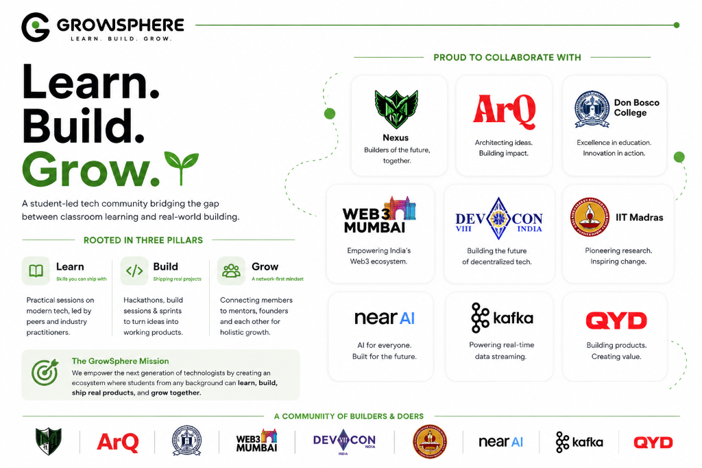
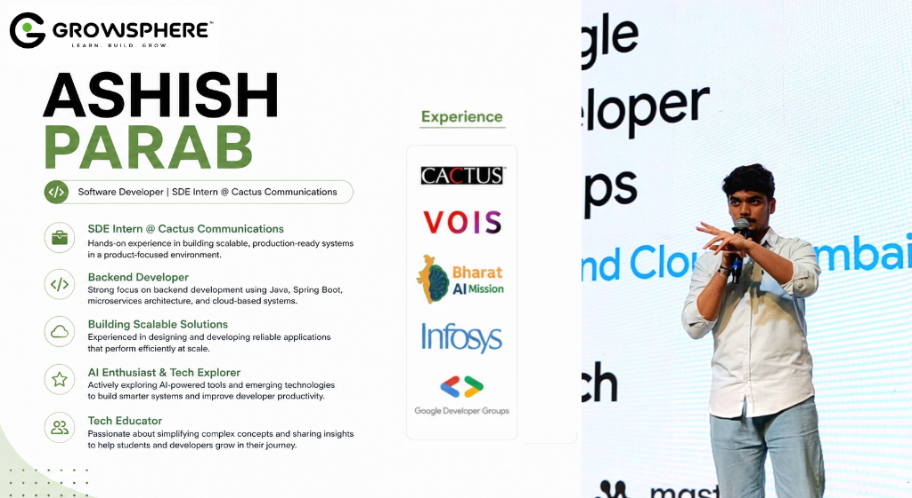
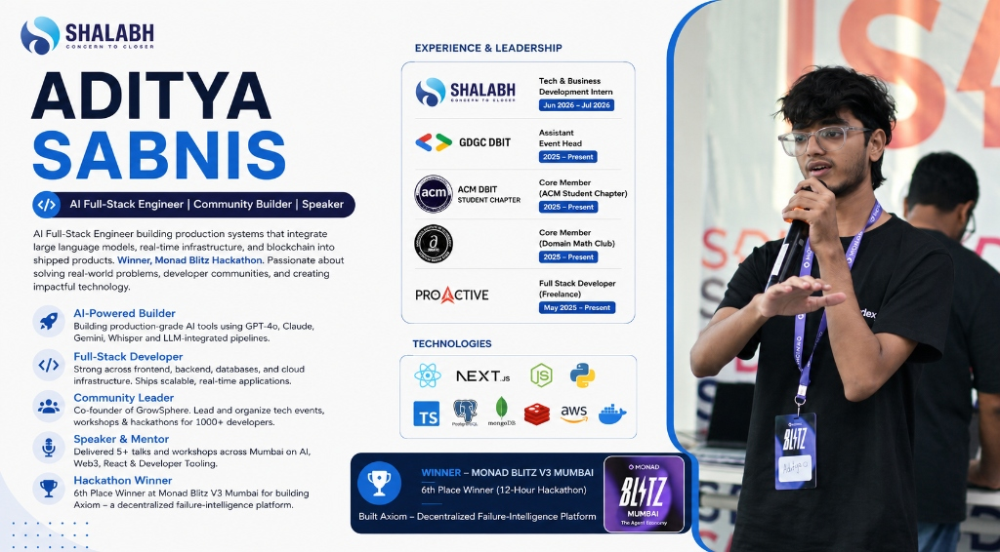

AI Research Agent
From a blank page to an autonomous agent
Five parts. Every technology shows up only after we've felt the problem it solves.
How Apps Work
- React in 2 min
- Backend & APIs
- DBs, auth, deploy
AI Knowledge
- LLMs
- RAG
- Embeddings
AI Agents
- Tools
- Agent loop
- LangGraph
Automate
- n8n basics
- AI Agent node
- RAG workflows
Build Live
- Blueprint
- 11-step sprint
- Demo & Q&A
How Apps Really Work
Every app has two halves
What users see is only the tip. Most of the real work happens where they can't see it.
Frontend = the dining room
Runs in the user's browser or phone. Shows data, collects clicks.
Backend = the kitchen
Runs on servers you control. Stores data, applies rules, talks to other services and AI.
React = build UI from components
React (by Meta) is the most popular way to build frontends: a tree of small, reusable pieces instead of one giant page.
React has State — the UI's memory
Change the data and React re-draws the screen for you. But where does that data come from? The backend.
So what does a backend actually do?
Code that runs on a server you control — not on the user's device. Six jobs, in every app you've ever used.
Business logic
The rules: "Is the coupon valid? Can this user post?"
Store data
Users, posts, orders — safely, in databases.
Authentication
Who are you, and what are you allowed to do?
Integrations
Payments, email, maps, AI models — via their APIs.
Heavy lifting
AI, video, reports — too big for a phone.
Security
Secrets, validation, limits — enforced where users can't tamper.
Why not do it all in the browser?
Because everything in the browser is public, editable and limited by the user's device.
Must live on a server
The life of a request
What happens in the ~100 milliseconds after you tap "Load posts".
What is an API? The restaurant analogy
An API (Application Programming Interface) is the menu + waiter: a fixed set of things you can ask for, and a safe way to ask.
Anatomy of an HTTP request
Every API call is a small text message with the same parts. Learn these once, read any API.
GET /api/users/42 ← method + path Host: api.myapp.com Authorization: Bearer eyJhb… ← headers Accept: application/json
200 OK ← status Content-Type: application/json { "id": 42, "name": "Asha", ← body "role": "student" }
HTTP methods = CRUD
Almost everything an app does is Create, Read, Update or Delete. REST maps each one to an HTTP method.
Read
GET /postsLoad the feed
Create
POST /postsPublish a new post
Update
PATCH /posts/7Edit post #7
Delete
DELETE /posts/7Remove post #7
REST rule of thumb: nouns in the URL (/posts), verbs in the method (GET, POST…).
Status codes: how the server replies
A 3-digit number tells you instantly what happened. The first digit is all you need to remember.
Success 🎉
200 OK
201 Created
Go elsewhere ↪
301 Moved
304 Not Modified
You messed up 🙋
400 Bad Request · 401 Who are you?
403 Not allowed · 404 Not Found
429 Too Many Requests
We messed up 🔥
500 Internal Error
503 Unavailable
What backend code looks like
Different languages, same idea: when this URL is called, run this function and return JSON.
@app.get("/posts/{post_id}") def get_post(post_id: int): post = db.find_post(post_id) return {"id": post.id, "title": post.title}
app.get("/posts/:id", async (req, res) => { const post = await db.findPost(req.params.id); res.json({ id: post.id, title: post.title }); });
Inside a backend: layers
Good backends split the work into layers, each with one job. Follow a "create post" request through them.
Monolith vs microservices
One big backend, or many small ones that talk to each other over APIs?
Monolith
Start hereMicroservices
At scaleDatabases: SQL vs NoSQL
Where the backend keeps data permanently. Two big families, two shapes of data.
SQL · tables
| id | name | college | |
|---|---|---|---|
| 1 | Asha | asha@mail.com | DBIT |
| 2 | Rohan | rohan@mail.com | VJTI |
| 3 | Meera | meera@mail.com | SPIT |
Fixed columns, relations between tables (JOINs), strong guarantees for money & orders.
NoSQL · documents
{ "id": 1, "name": "Asha",
"skills": ["React", "FastAPI"],
"socials": { "github": "asha-dev" } }Flexible shape per record, nested data, easy to scale out horizontally.
Caching: remember the answer
Databases are slow-ish. If many users ask the same thing, keep a copy in fast memory (e.g. Redis).
Background jobs & queues
"Send 10,000 emails" shouldn't freeze the app. Accept the job fast, do the work in the background.
Auth: who are you vs what can you do
Two different questions, two different error codes.
Authentication
"Who are you?" · fails with 401
Authorization
"What are you allowed to do?" · fails with 403
The backend security checklist
Six habits that prevent most real-world breaches.
Secrets in env vars
Keys live in .env — never in code, never in Git.
Hash passwords
bcrypt / argon2. Never store plain text.
Validate every input
Check type, length, format on the server.
No SQL injection
Use parameterized queries / an ORM.
HTTPS everywhere
Encrypt everything in transit.
Rate limiting
Stop abuse & bots → 429 Too Many Requests.
Ship it, then scale it
From your laptop to the internet — and what happens when 10,000 users show up.
The full backend picture
Every piece from this part, in the architecture most real apps use.
Give the AI Knowledge
Meet the LLM — a next-word machine
A Large Language Model read a huge slice of the internet and learned to predict the next word — very, very well.
Groq Llama 3 · Gemini · GPT
Great at explaining, summarising and writing.
Never read your PDF
Your notes, reports and private files weren't in its training data.
The 100-page document problem
"Just paste the whole PDF into the prompt"? Watch what happens.
The solution: RAG — the open-book exam
Retrieval-Augmented Generation: find the right page first, then let the model answer.
Answers from memory
Looks up the exact page
How RAG works in 6 steps
From raw document to a grounded, cited answer.
[0.82, 0.11, …]
[-0.05, 0.67, …]
— report.pdf p.12
Why can't we just search keywords?
Humans use synonyms. Keyword matching can't see that two sentences mean the same thing.
What is an embedding? Meaning → numbers
An embedding model turns any sentence into a long list of numbers that captures what it means.
numbers per sentence — coordinates in a 768-dimensional "meaning space".
Vector search in 2D space
Squash 768 dimensions into 2 and you can see it: similar ideas cluster together.
"How does retrieval work?"
Score = cosine similarity (1.0 = same meaning, 0 = unrelated).
Vector databases: ChromaDB & friends
Where we store every chunk's embedding and run lightning-fast similarity searches.
results = collection.query( query_texts=[question], n_results=3 )
Give the AI Capabilities
What if the answer isn't in the PDF?
Users ask about today's news, live prices, fresh releases. A static file can't keep up.
"What's happening in AI today?"
2 MONTHS AGO
The world changed this morning.
(Example headlines — the point is they're newer than any file.)
Give the AI tools to act
A tool is a function the AI can choose to call — search docs, search the web, do maths.
which tool?
LLM vs RAG vs AI Agent
Three levels of modern AI apps. Each one adds a superpower.
LLM
Generates an answerRAG
Retrieves informationAI Agent
Decides what to doWhat makes an agent? The decision cycle
No hard-coded script: it acts, looks at the result, and decides its next move.
Q: "Compare our Q3 report with today's market news"
Agents need a workflow
Real research takes multiple steps with branches and checks. We need to orchestrate them.
LangGraph = State + Nodes + Edges
Three ideas, and you can model any multi-step AI system as a clean graph.
Shared memory
class State(TypedDict): question: str docs: list answer: str
Functions that work
def search_docs(state): docs = chroma.query(…) return {"docs": docs}
Where to go next
graph.add_edge( "analyze", "search") graph.add_conditional_edges( "router", pick_route)
Conditional edges: the decision router
The graph inspects the question and chooses a path at runtime.
The self-correcting retry loop
Bad search results? The agent rewrites its query and tries again — with a safety limit.
max_retries = 2 — self-correcting, never stuck in an infinite loop.Automate with n8n
What is n8n?
An open-source, visual workflow automation tool. Connect apps, APIs and AI by linking nodes — and drop into code whenever you need to.
Open source
Free to self-host, or use n8n Cloud
400+ integrations
Gmail, Slack, Sheets, Notion, Telegram…
Code when needed
JavaScript / Python Code node, HTTP Request
Six ideas and you know n8n
Everything in n8n is built from these.
Workflow
A canvas of connected nodes = one automation.
Trigger node
What starts it: webhook, schedule, app event, chat.
Action nodes
Do one thing: send email, call an API, run code.
Items (JSON)
Data flows between nodes as JSON — same as APIs.
Expressions
Use earlier data: {{ $json.email }}
Credentials
API keys stored encrypted — never in the workflow.
Triggers: what starts a workflow
Every workflow begins with exactly one event.
Webhook
Any app calls your URL
Schedule
Every day at 9 AM (cron)
App event
New email, new row, new file
Chat message
Built-in chat, Telegram, WhatsApp
Form
Someone submits a form
The AI Agent node
One node, three plug-in slots: a model to think, memory to remember, and tools to act.
RAG without writing code
The same two phases from Part 02 — as two small workflows.
Write code or use n8n?
Not a competition — they're best together.
Code
FastAPI · LangGraph · Express
n8n
visual workflows
AI automations you can build this week
Each of these is 4–8 nodes.
Inbox triage
Gmail → AI classifies → urgent to Slack, rest labelled
Daily AI news digest
Schedule 9 AM → web search → AI summary → Telegram
College FAQ bot
Telegram → AI Agent + RAG over the college handbook
Resume screener
Form upload → AI scores vs job description → Sheet
Event registrations
Form → Sheet → personalised AI email → reminder
Content repurposer
New blog post → AI writes LinkedIn + X posts → drafts
Build it: a Telegram AI assistant
Six steps from empty canvas to a bot your friends can chat with.
Create a bot with @BotFather, paste the token
Prompt = the incoming message text
Groq (fast & free tier) or OpenAI
Keyed by chat ID, last ~10 messages
HTTP Request tool → a search API (e.g. Tavily)
Reply with the agent's output
# the prompt is your "code" You are a friendly research assistant for college students. - Use the web_search tool for anything recent or factual. - Cite sources as links. - Keep answers under 120 words.
Activate the workflow → it runs 24/7 on every message.
Start using n8n today
Run it free on your laptop in one command, or sign up for n8n Cloud.
# Option 1 · Node.js installed npx n8n # Option 2 · Docker docker run -it --rm -p 5678:5678 \ -v n8n_data:/home/node/.n8n \ docker.n8n.io/n8nio/n8n # then open http://localhost:5678
Thousands of community workflows at n8n.io/workflows
Re-run a node without re-triggering the whole flow
See exactly what data each node got and returned
Get alerted when an automation fails
Let's Build It
Put it all together: the master blueprint
The complete system you now understand — and will build today.
The whole journey in 4 levels
Every technology today answered one concrete problem.
Understand apps
Give AI knowledge
Give AI capabilities
Automate it
You understand the
entire architecture.
Every file, library and endpoint you write in the next hour will make sense.
Let's build the AI Research Agent 🚀
Our 11-step implementation plan for today's coding session.